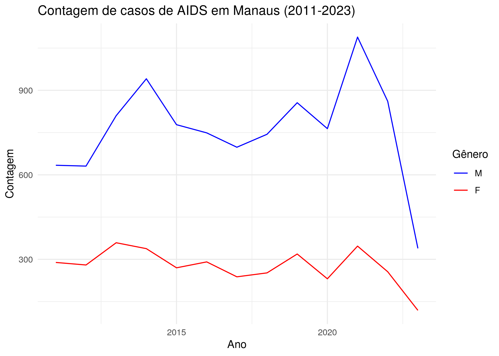
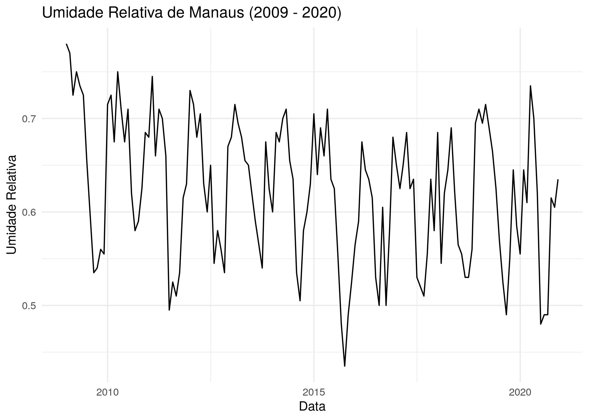

amazonasdatahub
O objetivo do amazonasdatahub é reunir bases de dados do Estado do Amazonas (AM), para a realização de estudos e preparação de materiais didáticos, além de facilitar o acesso a dados tratados e organizados, viabilizando pesquisa e ensino e permitindo a aplicação de métodos estatísticos.
A documentação completa de ambas as versões em Python e R estão disponíveis nos seguintes idiomas:
Documentação da versão em R e vignettes:
Visão Geral
O pacote amazonasdatahub disponibiliza bases de dados de diversos tipos e fontes, e todas estão ligadas ao Estado do Amazonas.
Lista das bases de dados disponíveis:
| Base de dados | Área | Fonte |
|---|---|---|
| agriculture_amazonas | Agriculture and Livestock | Institute of Agricultural and Sustainable Forestry Development of the State of Amazonas - 2024 |
| aids_amazonas | Health | Department of HIV, AIDS, Tuberculosis, Viral Hepatitis, and Sexually Transmitted Infections, 2024 |
| gdp_amazonas | Economy | Scientific Journal of Applied Social and Clinical Science - TIME SERIES ANALYSIS FOR THE QUARTERLY GROSS DOMESTIC PRODUCT OF AMAZONAS |
| humidity_manaus | Climate | NASCIMENTO, Leonardo Brandão Freitas; LIMA, Max Sousa; DUCZMAL, Luiz H. P-min-stable regression models for time series with extreme values of limited range. Environmetrics, Issue 2, v. 36, 2025. |
| malaria_amazonas | Health | Lais Baroni, M. P. (2020). An Integrated Dataset of Malaria Notifications in the Legal Amazon (Dataset). Synapse. https://doi.org/10.7303/SYN21552203 |
| prf_amazonas | Road Safety | Brasil. Polícia Rodoviária Federal (PRF). Dados Abertos da PRF: Acidentes de Trânsito |
| rionegro_amazonas | Environment | Porto de Manaus. Nível do Rio Negro |
| srl_muni | Education | ALMEIDA, Thiago da Cruz de. Physical Literacy e desempenho em leitura de escolares amazônicos: um estudo de associação. 2024. 104 f. Dissertação (Mestrado em Educação) - Universidade Federal do Amazonas, Manaus, 2024. |
Instalação
Para instalar o amazonasdatahub, é necessário ter as seguintes ferramentas instaladas no seu computador ou ambiente de desenvolvimento:
- R versão 4.41.1 (2024-06-14) ou superior;
- Pacote
remotesno R.
Você pode instalar a versão de desenvolvimento do amazonasdatahub com:
# Instalando o pacote remotes
install.packages("remotes")
# Carregando o remotes
library(remotes)
# Instalando o amazonasdatahub
remotes::install_github("onelsoncarvalho/amazonasdatahub")Uso e Exemplos
Carregando amazonasdatahub
Use a função library() ou require() para carregar o pacote.
Você pode acessar a documentação de cada base de dados usando o operador de ajuda “?”.
You can see the documentation of each dataset using the help operator “?”.
?agriculture_amazonas
?aids_amazonas
?gdp_amazonas
?humidity_manaus
?malaria_amazonas
?prf_amazonas
?rionegro_amazonas
?slr_muniExemplos
Incidência de doenças
A base de dados aids_amazonas fornece dados das ocorrências de AIDS nos municípios do Amazonas.
Uma das análises que podem ser feitas é: verificar a série temporal da contagem de casos filtrado de determinado município, onde os casos são agrupados pelo sexo do indivíduo observado. Para fazer isso, utilizaremos os pacotes dplyr para estruturar os dados, e o ggplot para fazer o gráfico e customizá-lo.
# Filtrando por município e plotando a contagem de casos por gênero
aids_amazonas %>%
filter(name_muni == "Manaus") %>%
group_by(gender) %>%
ggplot(aes(x = year, y = cases, group = gender, color = gender)) +
geom_line() +
scale_color_manual(values = c("blue", "red")) +
theme_minimal() +
labs(
title = "Contagem de casos de AIDS em Manaus (2011-2023)",
x = "Ano",
y = "Contagem",
color = "Gênero"
)
Séries Temporais
Com o conjunto de dados humidity_manaus, que reune dados de umidade relativa observados na cidade de Manaus de janeiro de 2009 a dezembro de 2020, podemos verificar séries temporais, e dentre elas, a da umidade relativa durante esse intervalo de tempo.
Usando dplyr, podemos criar uma coluna de data, que será composta pelos dados de mês e ano, e com o ggplot2, podemos criar o gráfico.
# Carregando o dplyr e ggplot2
require(dplyr)
require(ggplot2)
# Criando variavel de data unindo ano e mes, e em seguida,
# plotando o grafico
humidity_manaus %>%
mutate(date = as.Date(paste0(year, "-", month, "-","01"))) %>%
ggplot(aes(x = date, y = rh)) +
geom_line() +
theme_minimal() +
labs(
title = "Umidade Relativa de Manaus (2009 - 2020)",
x = "Data",
y = "Umidade Relativa"
)
Citação
- CARVALHO, Nelson Geraldo Aquino de; NASCIMENTO, Leonardo Brandão Freitas do. amazonasdatahub. 2026. https://onelsoncarvalho.github.io/amazonasdatahub.